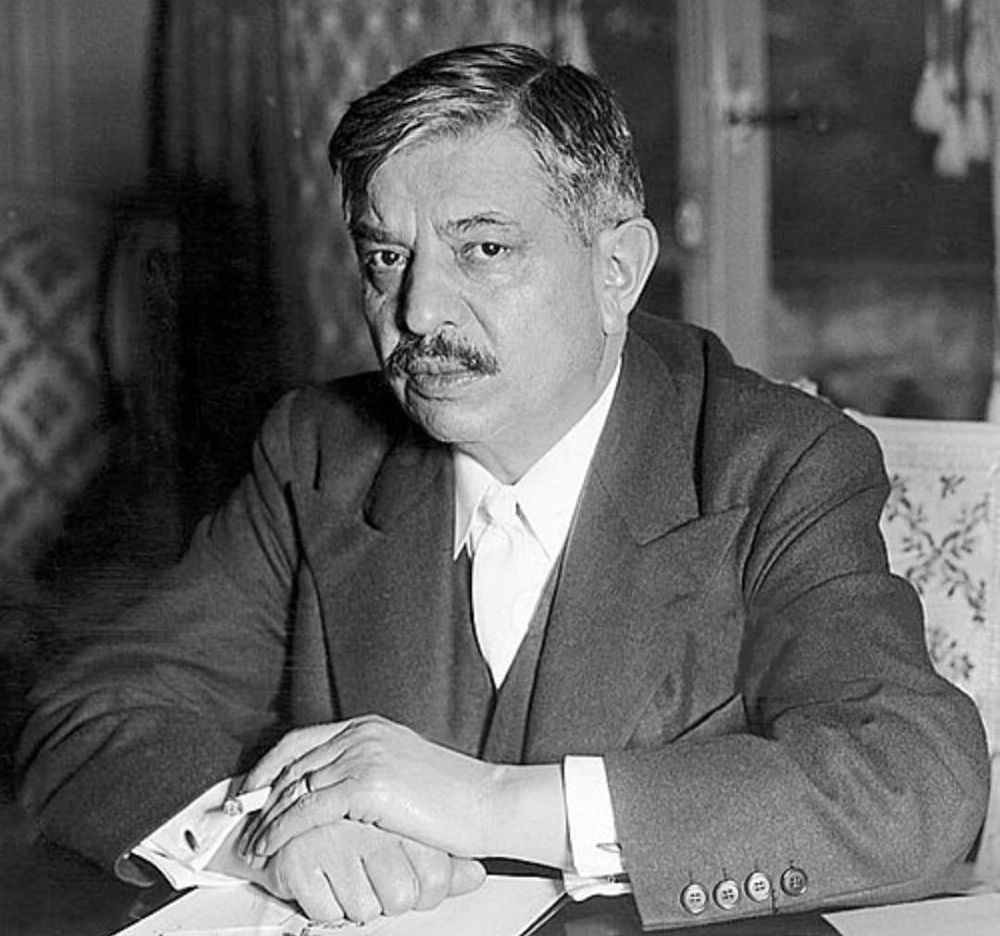

Portrait de Pierre Laval, chef du gouvernement de Vichy. Moustache noire, cheveux plaqués en arrière, costume sombre.
Nom : Pierre Laval
Dates : 28 juin 1883 – 15 octobre 1945
Origine : Châteldon (Puy‑de‑Dôme)
Fonction : Homme politique français – Chef du gouvernement de l’État français (Vichy)
Pierre Laval est l’une des figures centrales de la collaboration française avec l’Allemagne nazie. Ancien socialiste devenu homme d’État opportuniste, il rejoint le régime de Vichy et en devient le principal architecte politique, aux côtés du maréchal Pétain.
Son rôle est déterminant dans la mise en œuvre de la politique de collaboration, notamment dans les relations avec Hitler et dans l’alignement de la France sur les exigences du Reich.
Laval est plusieurs fois chef du gouvernement de Vichy. Il défend ouvertement la collaboration avec l’Allemagne, espérant préserver une marge de souveraineté française.
Il participe à la politique antisémite, aux lois d’exception et à la répression des opposants. Son action contribue directement à l’affaiblissement de la République et au renforcement de l’État autoritaire de Vichy.
Pierre Laval joue un rôle majeur dans la déportation des Juifs de France. Il accepte et organise la livraison de Juifs, y compris des enfants, aux autorités allemandes.
Sa phrase restée célèbre – « Je souhaite la victoire de l’Allemagne » – illustre son alignement sur le Reich et son choix politique assumé en faveur de la collaboration.
À la Libération, Pierre Laval est arrêté, jugé pour haute trahison et intelligence avec l’ennemi. Son procès est rapide, marqué par de fortes tensions politiques et morales.
Condamné à mort, il est exécuté par fusillade le 15 octobre 1945 à la prison de Fresnes, après une tentative de suicide ratée.
Laval reste l’un des personnages les plus controversés de l’histoire de France. Son nom est associé à la collaboration, aux déportations et à la destruction des valeurs républicaines.
Les historiens le considèrent comme l’un des principaux responsables politiques de la participation française aux crimes du régime nazi.